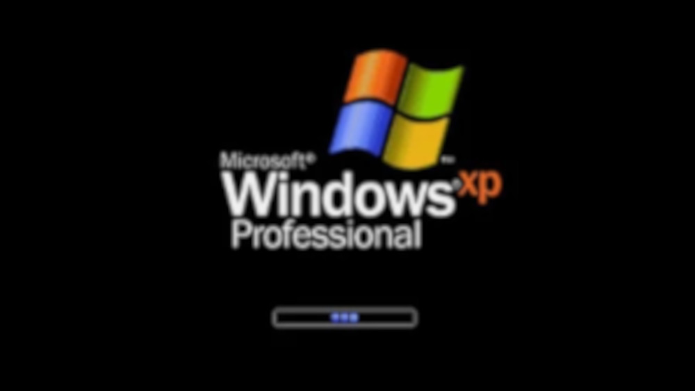

💻 A História do Windows
Tudo aquilo que você sempre quis saber sobre o sistema operacional mais utilizado do mundo O Windows é hoje um dos sistemas operacionais mais conhecidos do planeta. Presente em milhões de computadores pessoais, empresas, escolas e instituições governamentais, ele se tornou praticamente sinônimo de “computador”. Mas sua trajetória começou de forma muito mais simples e experimental do que muitos imaginam.
👨 A Origem da Microsoft e o Início de Tudo
O Windows foi desenvolvido pela empresa Microsoft, fundada em 1975 por Bill Gates e Paul Allen. A empresa nasceu com o objetivo de desenvolver softwares para microcomputadores, que na época ainda eram uma novidade. Antes do Windows existir, a Microsoft já havia obtido grande sucesso com o MS-DOS, um sistema operacional baseado em linhas de comando. Nesse ambiente, o usuário precisava digitar comandos específicos para executar qualquer tarefa. Não havia ícones, janelas ou mouse como conhecemos hoje. Tudo era texto. Com o avanço da computação gráfica e a popularização do uso do mouse, tornou-se claro que o futuro dos computadores estaria em interfaces mais amigáveis. Inspirados por conceitos vistos em laboratórios como o da Xerox PARC e impulsionados pelo crescimento da computação pessoal, a Microsoft começou a trabalhar em uma interface gráfica que funcionaria sobre o MS-DOS.
🪟 O Nascimento do Windows
Em 1985 foi lançado o Windows 1.0. Ele não era ainda um sistema operacional totalmente independente, mas uma interface gráfica que rodava sobre o MS-DOS. Seu grande diferencial era permitir que vários programas fossem abertos simultaneamente em “janelas” na tela. Foi justamente dessa ideia que surgiu o nome “Windows”. Apesar de inovador, o Windows 1.0 não foi um grande sucesso comercial. Seu desempenho era limitado pelo hardware da época, e muitos usuários ainda estavam acostumados ao ambiente de texto. A evolução continuou com o Windows 3.0, lançado em 1990. Essa versão trouxe melhorias significativas na interface gráfica, melhor gerenciamento de memória e maior estabilidade. Foi a primeira versão a conquistar grande popularidade, marcando o início da consolidação da Microsoft no mercado de sistemas operacionais gráficos.
🌍 A Revolução do Windows 95
O verdadeiro divisor de águas aconteceu em 1995 com o lançamento do Windows 95. Essa versão introduziu elementos que até hoje fazem parte da identidade do sistema, como o Menu Iniciar, a Barra de Tarefas e o botão “Iniciar”. Além disso, trouxe suporte nativo à internet, algo essencial no momento em que a rede mundial começava a se expandir rapidamente. O lançamento foi um evento global, com campanhas publicitárias milionárias. A música “Start Me Up”, dos Rolling Stones, foi usada como trilha da campanha, reforçando o conceito do botão Iniciar. Milhões de cópias foram vendidas em pouco tempo, consolidando o Windows como padrão de mercado.
💻 Consolidação e Estabilidade
No início dos anos 2000, a Microsoft lançou o Windows XP. Essa versão se tornou uma das mais queridas da história. Ela unificou as linhas doméstica e profissional do sistema, trouxe maior estabilidade baseada no núcleo NT e apresentou uma interface mais colorida e amigável. O Windows XP permaneceu em uso por mais de uma década, algo raro no setor de tecnologia. Posteriormente vieram versões como Windows Vista, que apesar de críticas relacionadas ao desempenho, introduziu importantes avanços em segurança, como o Controle de Conta de Usuário. Esses avanços serviram de base para o sucesso do Windows 7, lançado em 2009. O Windows 7 foi amplamente elogiado por sua estabilidade, desempenho e refinamento visual.

☁️ A Era Moderna
Em 2015, a Microsoft apresentou o Windows 10. Essa versão marcou uma mudança estratégica importante. Em vez de lançar um novo sistema a cada poucos anos, a empresa passou a trabalhar com atualizações contínuas. O Windows passou a ser tratado como um serviço, recebendo melhorias constantes de segurança e funcionalidade. Em 2021 foi lançado o Windows 11, trazendo um design mais moderno, centralização do menu Iniciar, melhorias de produtividade e integração com novas tecnologias, incluindo suporte aprimorado a aplicativos Android e foco maior em desempenho para jogos.
🧠 O Papel de Bill Gates na Criação
Embora o Windows seja fruto do trabalho de milhares de engenheiros, Bill Gates teve participação ativa nas primeiras fases do desenvolvimento da Microsoft e supervisionou de perto a estratégia que levou à criação da interface gráfica. Sua visão sempre foi colocar “um computador em cada casa e em cada mesa”, e o Windows foi a principal ferramenta para transformar essa ideia em realidade. A estratégia de licenciar o sistema operacional para diversos fabricantes foi um dos fatores decisivos para o domínio do mercado. Em vez de vender apenas hardware, como outras empresas faziam, a Microsoft tornou seu software compatível com diferentes marcas de computadores, ampliando drasticamente seu alcance.
📌 Curiosidades e Informações Extras
Uma curiosidade interessante é que o famoso papel de parede “Bliss” do Windows XP é uma fotografia real tirada na Califórnia, sem manipulação digital. Ela se tornou uma das imagens mais vistas da história. Outra informação pouco comentada é que o Windows quase teve outro nome antes de seu lançamento inicial. A equipe considerou alternativas, mas “Windows” acabou sendo escolhido por ser simples e descritivo. O Windows 98 foi fundamental para a popularização do padrão USB, facilitando a conexão de dispositivos externos. Já o Windows Vista, apesar das críticas, fortaleceu significativamente a arquitetura de segurança do sistema. Ao longo das décadas, o Windows passou de uma simples interface gráfica experimental para uma plataforma robusta que sustenta ambientes corporativos, jogos de alto desempenho, servidores e sistemas educacionais ao redor do mundo.